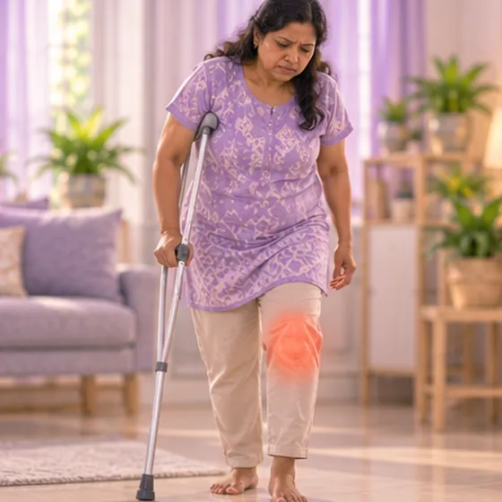

Fracture from weak bone
A bone that breaks easily because the bone has become weak
What it is
When a bone is weakened by another condition, it can break from a small knock, a fall from standing height, or even an ordinary movement.
- Hip, spine, wrist, any bone
- Older adults, after menopause
- Pain after a small knock
- Which doctor
- Bone doctor (orthopaedic) or family doctor; hospital for an X-ray
- Common in
- Older adults, women after menopause, people with weak bones
- Contagious
- No
- Course
- Needs a doctor's care; recovery is often slower than in strong bones
Common signs

Swelling and bruisingSwelling with ecchymosis 
Cannot put weight on the legInability to bear weight
More signs
- Sudden pain in the back, hip or wrist after a small knock or fall
- A stooped back or getting shorter over time, which may be an old break in the spine
Why it happens

Long-term use of some medicinesMedication side effect
Other causes
- Thin, weak bones (osteoporosis), common after menopause and with age
- Low calcium or vitamin D, little exercise, smoking or heavy drinking
- Some illnesses that affect bones, including some cancers; a doctor can check
See a doctor first if
- A bent or out-of-shape limb, or bone through the skin: go to hospital now
- Pain in the hip or groin after a fall, or cannot stand or walk: go to hospital
- Sudden severe back pain, or numbness or weakness in the legs
- Cannot pass urine or stools, or lose control of them
- A bone that breaks again, or pain without any injury
If any apply, please see a doctor before a session.
This page is general information. Please keep taking your normal medicine and keep seeing your doctor.
Keep taking your normal medicine and keep seeing your doctor. Our session is a gentle support and does not replace medical care.
Looking after yourself

Make the home safe from fallsFall prevention
More ways to look after yourself
- Rest the part and get it checked by a doctor soon
- Ask your doctor about bone strength and what medicine or supplements suit you
- Do gentle weight-bearing exercise such as walking once your doctor allows it
Tell your therapist
- Weak bones
- Recent back injury or surgery
- Pacemaker or metal implant
- Cancer or cancer treatment
- Blood-thinning medicine
Your therapist will go through this with you before starting.
Questions and answers
What is Fracture from weak bone?
A bone that breaks easily because the bone has become weak. When a bone is weakened by another condition, it can break from a small knock, a fall from standing height, or even an ordinary movement.
What are the common signs of Fracture from weak bone?
Swelling and bruising · Cannot put weight on the leg
Why does Fracture from weak bone happen?
Long-term use of some medicines
How can I look after myself with Fracture from weak bone?
Make the home safe from falls
Can an AI Body Master session help with Fracture from weak bone?
A session is gentle, needle-free meridian support for your wellbeing. It does not treat or cure Fracture from weak bone and never replaces your medicine or your doctor. Tell your therapist about it before the session starts.
Related conditions
References: General information based on public health sources such as Mayo Clinic, NHS, Cleveland Clinic and NCBI StatPearls.
Page updated: 2026-11-01